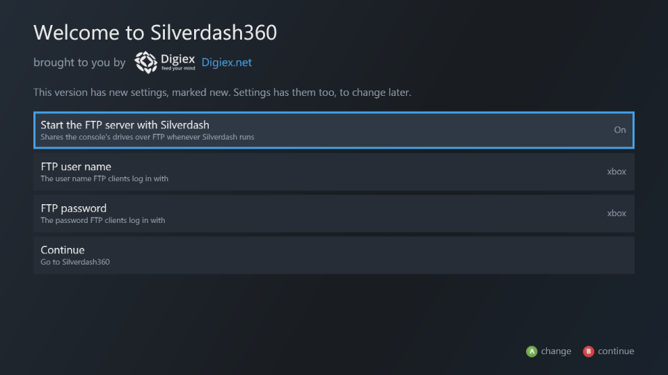
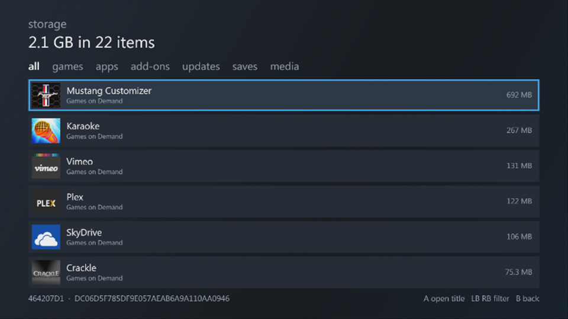

Settings¶

| Setting | |
|---|---|
| Theme | The wallpapers and colours: see Themes |
| System settings | The console's own settings, as the Xbox Dashboard has them: see System settings |
| Storage | Everything stored, largest first |
| Search | Find a game or app |
| File browser | Every file on the console's drives |
| FTP server | The console's drives over the network, on or off now: see FTP server |
| Start the FTP server with Silverdash | Starts it whenever Silverdash360 starts |
| FTP user name, FTP password | What FTP clients log in with |
| Welcome screen | The basic settings, as at the first start: see Welcome screen |
| Refresh library | Reads every package again, add-ons, saves and videos too, for when something is missing or out of date |
| Sign in | Signs a profile in |
| System version, Language, Console time | The console's |
| Running as title, Running from | The title ID Silverdash360 runs as, and its folder |
| Version | Silverdash360's version, build and commit |
| Check for updates | Looks for a new version: see Updating |
| XboxNGen | Shown when Silverdash360's code runs compiled, as native code XboxNGen made |
| Return to the Xbox Dashboard | Leaves Silverdash360 for the console's own dashboard, as Xbox Dashboard in apps does, even where Silverdash360 is the default dashboard |
| Debug server | For testing and development, off unless you turn it on: see Debug server. With it on, anyone on your network can control Silverdash360 |
System settings¶
System settings has the Xbox Dashboard's Console Settings and Network Settings, page by page in its order, with its choices, and changes them as it does:
| Page | Settings |
|---|---|
| Display | HDTV Settings (or Screen Resolution), Screen Format, Reference Levels (or Black Level), PAL Settings, HDMI Color Space, Display Discovery, Screen Saver, 3D TV, TV Size |
| Audio | Digital Output, Sound Effects, Ratings Collection Sound |
| Language and Locale | Language, Locale |
| Clock | Date and Time, Time Format, Time Zone, Daylight Saving |
| Startup and Shutdown | Startup, Auto-Off, Background Downloads |
| Auto-Play, Auto-Downloads, Remote Control | On or off, and which remotes |
| System Info | The console's serial number and ID, the versions, and the codes support asks for |
| Console Name | Xbox 360, Living Room, Family Room, Game Room, Bedroom, or a name of your own (Custom...) |
| Network Settings | Configure Network (IP Settings, DNS Settings, Wireless, PPPoE Settings, Advanced Settings, Restore to Factory Defaults), Test Xbox Live Connection, Network Statistics, and the address, mask, gateway and DNS servers in use |
Only what your cable, TV and region have is shown, as in the Xbox Dashboard: PAL Settings, for one, only on a PAL console. TV Size is shown for a TV that gives its size; the Xbox Dashboard shows it only for a 3D TV, as 3D games use it. Most changes take effect at once.
- HDTV Settings lists what your display takes, as the Xbox Dashboard does: its best resolution first as Optimal Resolution, 480p, 720p, 1080i and 1080p (greyed when an HDMI TV doesn't take them), then the others it takes. Silverdash360 starts again in the one chosen and asks whether to keep it. If you don't say yes within 10 seconds, as when the TV shows nothing, it tries the console's next timing for that resolution (HDMI, DVI and VGA), and when there's none, goes back to the old resolution.
- PAL Settings: kept only if you say yes within 10 seconds too.
- Screen Format, Reference Levels and HDMI Color Space: Silverdash360 starts again to use them.
- Display Discovery and 3D TV: the console restarts, once you say yes to restarting now. Turning Display Discovery off goes to 640 x 480, normal screen format and digital stereo, as the Xbox Dashboard does.
- Time Zone and Daylight Saving keep the clock at the same local time, unless Xbox Live sets the clock; Date and Time can't be changed then either.
-
Startup: from the next start. A dashboard set up with DashLaunch starts in place of the Xbox Dashboard.
-
Network Settings: each page's Done saves its settings, and the network uses them at once. Wireless lists the networks found, strongest first; choosing one asks for its key, then says within 20 seconds whether the console joined it. The console uses a plugged-in network cable instead, so with one in, the network is only saved. Test Xbox Live Connection checks the network, the Internet and Xbox Live. Network Statistics does too, then measures latency and packet loss, upload and download speeds against Xbox Live's test servers, and on wireless the signal strength and Wi-Fi speed. Each test takes about 10 seconds.
-
System Info: the Xbox Dashboard's hidden Reset System Settings is here too. On the System Info page, press the Xbox Dashboard's button sequence (LT, RT, X, Y, LB, RB); after you say yes, the console's settings go back to the factory's and it restarts. Your games, profiles and saves stay.
Connected Devices isn't here yet, nor Network Settings' PC and Windows Media Center tests, ad-hoc networks and wireless bridges.
Welcome screen¶

The welcome screen, Welcome to Silverdash360, opens at the first start with the basic settings: whether the FTP server starts with Silverdash360 and, once it does, its user name and password. It opens again after an update that adds basic settings, with those marked new. Continue or B goes on to Silverdash360. Welcome screen in settings opens it any time.
Themes¶

The theme follows the console dashboard's own by default (Same as the Xbox Dashboard), so your wallpapers come with you. Theme lists the themes built into the console's dashboard and those installed on the console; A uses one. Each profile keeps the theme it picked, and so does nobody signed in: signing out shows the one picked with nobody signed in, or Silverdash360's own colours if none was. The built-in themes (Spectrum, Day and Night) are read from the console's own dashboard files, so they're the ones your dashboard version has; the dashboard's Xbox 360 theme isn't among those files, so Silverdash360 shows its own colours for it. A theme's four wallpapers go to the sections as they went to the first dashboard's blades: the first (Xbox Live's) to home, apps and me, the second to games, the third to media and the fourth (System's) to settings. Its colours go to Silverdash360's. Silverdash is Silverdash360's own colours and no wallpaper. Blades (Default) and Blades (Carbon) are colours after the two styles of the first Xbox 360 dashboard, with no wallpaper; as its blades did, each section has a colour of its own: me is Xbox Live's orange, games green, media blue, apps the Marketplace blade's and settings the System blade's. Picture themes made in the Xbox Dashboard from your own pictures work too. If the dashboard's theme for your profile is a theme package that's no longer installed, such as one from an older dashboard, Silverdash360 shows its own colours and settings names the missing theme.
Theme editor¶
Edit current theme, the first row of Theme, makes a theme of your own, starting from the one shown:

- Colours: the accent, secondary text, panels, the selected panel and the three colours of the background. A on one opens a grid of colours; the dashboard takes each on as you move, A keeps it and B puts the old one back.
- Wallpapers 1 to 4: for home, apps and me, for games, for media, and for settings, as a theme's are. A wallpaper can be none, a JPEG or PNG picture on the console's drives (up to 4 MB), or any wallpaper of the built-in and installed themes, shown behind the list as you pick.
- Save makes it the custom theme of the profile signed in (or of nobody signed in, when nobody is) and uses it. Save for nobody signed in too also keeps it for when nobody is signed in.
- Save as... asks for a name and keeps it in Silverdash360 for everyone on the console; it's listed in Theme under that name. X on a saved theme there, twice, deletes it.
B leaves without saving and puts the colours back. Once saved, Custom theme in the theme list picks it again; it's listed for a profile that has one, or for nobody signed in when there's one for nobody.
Storage¶

Everything stored on the console, largest first, by kind: games, apps, add-ons, title updates, saves and media. LB and RB filter it. A opens the title a package belongs to. Add-ons and saves are as Silverdash360 last read them: when you opened their title's page, or at the last Refresh library.
File browser¶
Every folder and file on the console's drives. A opens a folder, plays a song, video or picture, or starts a .xex. A content package shows its name and picture.
Y on a .xex adds it to the library, wherever it is: pick Games or Apps for the shelf it's listed on. Y on one added before moves it to the other shelf, or Remove from library takes it out again; the file itself stays where it is. See What's listed.
FTP server¶
The FTP server shares the console's drives while Silverdash360 runs. FTP server turns it on and off with A, and shows the address, user name and password while it's on. With Start the FTP server with Silverdash on, it starts by itself each time.
The user name is xbox and the password six digits made up at the first start; both stay the same until you change them. A on FTP user name or FTP password opens the console's keyboard to change it.
- Connect with plain FTP, such as FileZilla with Only use plain FTP; there's no TLS.
- Each drive is a folder:
Hdd1,Usb0toUsb2,Mu0,Mu1andDvd(read only). - You can download, upload, rename and delete, and make and remove folders.
- FTP sends the password unencrypted, so use it on a network you trust.
Debug server¶
Debug server, the last setting, turns on a TCP port (4601) that takes commands from a PC: what tests, tools\deploy.py and the other tools in the repository use (see Debug server and tests). A turns it on and off at once, and it stays as you left it the next time Silverdash360 starts. It's off unless you turn it on; builds made for testing have it on.
It has no password. While it's on, anyone on your network can control Silverdash360, read the files on the console's drives and start programs. Leave it off unless you're testing or developing, and then use it on a network you trust.